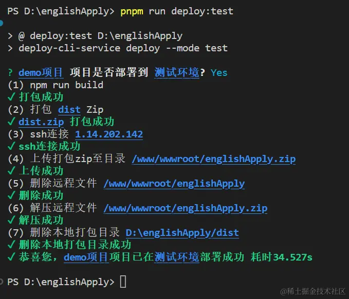
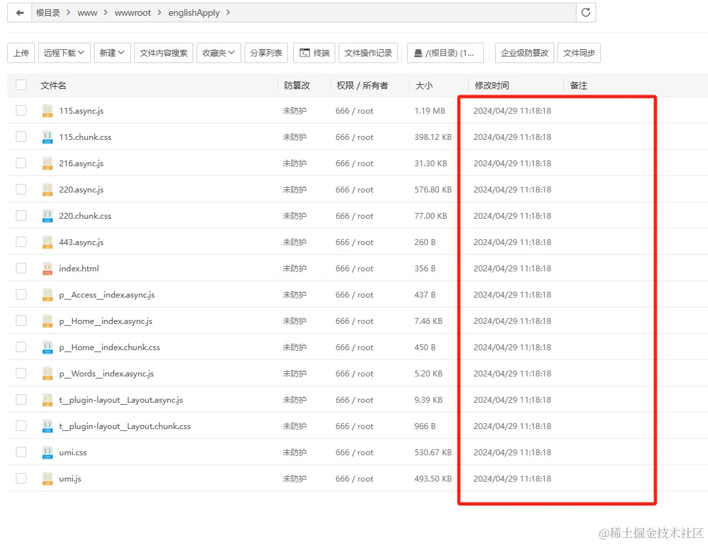

HaoTian · 2024-11-02 20:36:17
很多公司的前端部署流程都是先打一个 dist 包。然后给后端同事帮忙部署。
我们整个网站的读取，其实就是我们上传一个静态的文件包到服务器，然后服务器上的后台服务读取我们的静态包，来进行页面的展示。所以，前端自动化部署的关键，就是，能把 dist 包传到服务器的指定目录下就 OK 了。
推荐一个 deploy cli 工具(deploy-cli-service)
npm install deploy-cli-service -g 进行全局安装 。deploy-cli-service -v 查看版本在项目根目录执行 deploy-cli-service init 进行初始化
deploy-cli-service init 命令执行后项目目录下会出现一个名为 deploy.config.js 的文件
然后看看相关的属性有没有什么需要修改的就 ok。
然后在命令行执行 npm run deploy:test
成功部署后会如下显示
 配置 deploy.config.js 时尽量使用 ssh 密钥登录，不要使用服务器密码，把服务器密码写在前端代码里是一件非常不好的操作。